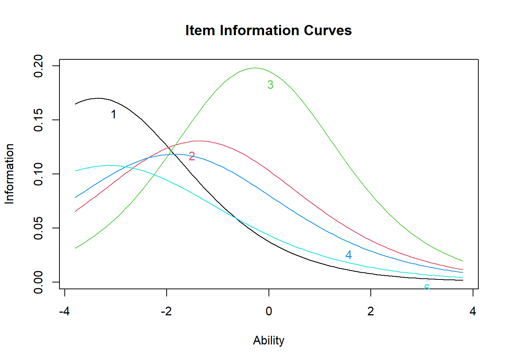
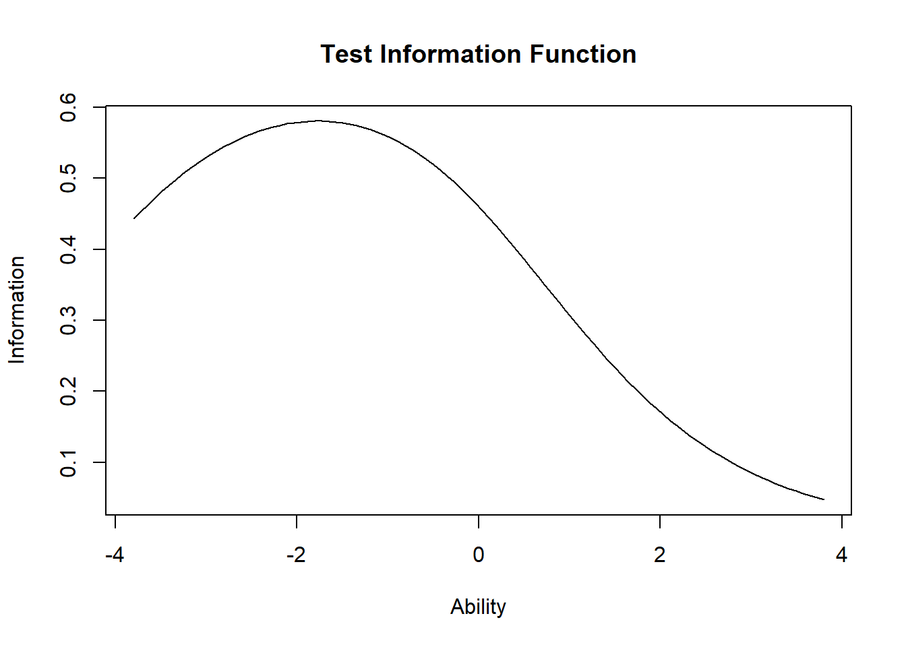
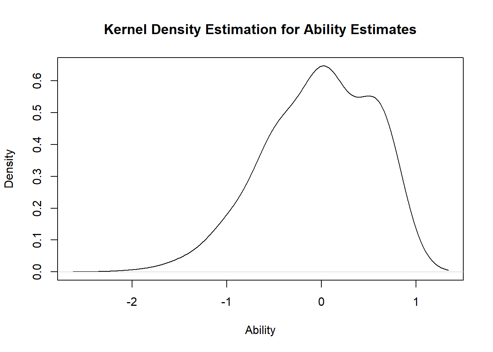

Hello everyone and welcome back to another post about Item Response Theory models, a topic which has caught my interest in recent times and that I am trying to learn bit by bit both from a theoretical perspective and a practical perspective. Today, I would like to continue the topic started last month with the two-parameter logistic model as a more sophisticated version of the simple Rasch model for multi-item binary response questionnaire data. Last time I focussed mostly on the theoretical introduction of the model and its differences compared to the standard one-parameter logistic model. Today, I would like instead to focus on how to implement such model in R using some pre-defined software packages and some example data as well as to see how to interpret the results from such analysis.
As a quick recap about the modelling framework, we may define the item response function or item characteristic curve (ICC) for the two-parameter logistic IRT model as:
where \(Y_{ik}\) denotes the response on item \(k\) for individual \(i\), whose probability of being correct (i.e. equal to \(1\)) is determined on the logistic scale as a function of some individual latent ability parameter \(\theta_i\), an item difficulty parameter \(b_k\) (determining the position of the ICC), and an item discriminability parameter \(a_k\) (determining the steepness of slope of the ICC).
Now, let’s try to see how we can implement this model to analyse some multi-item questionnaire data in R and, more specifically, using functions from the packages ltm and psych. As motivating example we use the dataset from the ltm package named LSAT which is a classical example in educational testing for measuring ability traits, consisting in a dataframe with the responses of \(1000\) individuals to \(5\) questions. After loading the dataset, we proceed to fit the two-parameter logistic IRT model using the function ltm
library(ltm)library(psych)#load datalsat.df <- LSAT#fit 2-PLM via ltmPL2.rasch <-ltm(lsat.df~z1)summary(PL2.rasch)
The summary function allows to display key results from fitting the model, namely the different estimates for the item discrimination and difficulty parameters \(a_k\) and \(b_k\) based on the observed data. Higher difficulty values indicate that the item is harder (i.e. require a higher latent ability to answer correctly); higher discriminability estimates indicate that the item has better ability to tell the difference between different levels of latent ability. These can both be made clearer in the ICC plots, which we can draw using the function plot.
Unlike the ICCs for the one-parameter logistic IRT model, the ICCs for the two-parameter logistic IRT model do not all have the same shape. Item curves which are more “spread out” or flat indicate lower discriminability (i.e. that individuals of a range of ability levels have some probability of getting the item correct). Conversely, an item with high discriminability (steep slope) shows that for such item we have a better estimate of the individual’s latent ability based on whether they got the question right or wrong.
A note about difficulty: because of the differing slopes, the rank-order of item difficulty changes across different latent ability levels. We can see that item 3 is generally the most difficult item (i.e. lowest probability of getting correct for most latent trait values), while items 1 and 5 are roughly the easiest.
Next, we may display the item information curve (IIC) using again the plot function. IICs show how much “information” about the latent trait ability an item gives. Mathematically, these are the first derivatives of the ICCs. Item information curves peak at the difficulty value (point where the item has the highest discrimination), with less information at ability levels farther from the difficulty estimate. Practically speaking, we can see how a very difficult item will provide very little information about persons with low ability (because the item is already too hard), and very easy items will provide little information about persons with high ability levels.
#plot ICCplot(PL2.rasch,type=c("IIC"))

Similar to the ICCs, we see that item 3 provides the most information about high ability levels (the peak of its IIC is farthest to the right) and item 1 and 5 provides the most information about lower ability levels (the peak of their IICs is farthest to the left). While all ICCs and IICs for the items have the same shape in the one-parameter model (i.e. all items are equally good at providing information about the latent trait), instead, in the two-parameter model this does not have to be the case.
Next, we plot the information curve for the whole test. This is simply the sum of the individual IICs above. Ideally, we want a test which provides fairly good coverage of a wide range of latent ability levels. Otherwise, the test is only good at identifying a limited range of ability levels.
#plot IC testplot(PL2.rasch,type=c("IIC"),items=c(0))

The IIC for the whole test shows that the test provides the most information for lower-than average ability levels (about \(\theta=-2\)), but does not provide much information about higher ability levels. Next, we test how well the two-parameter model fits the data using the item.fit function to test whether individual items fit the two-parameter logistic IRT model.
#fit of the modelitem.fit(PL2.rasch,simulate.p.value=T)
Item-Fit Statistics and P-values
Call:
ltm(formula = lsat.df ~ z1)
Alternative: Items do not fit the model
Ability Categories: 10
Monte Carlo samples: 100
X^2 Pr(>X^2)
Item 1 276.1857 0.198
Item 2 253.5272 0.7129
Item 3 437.0737 0.2574
Item 4 216.3252 0.7624
Item 5 400.3201 0.1188
We see from this all items fit the model well (large p-values). We then estimate the individual latent ability scores using the factor.scores function and plot the density curve of the estimated ability scores.
#estimate theta and plot density curve of estimated thetatheta.rasch <- ltm::factor.scores(PL2.rasch)summary(theta.rasch$score.dat$z1)
Min. 1st Qu. Median Mean 3rd Qu. Max.
-1.8953 -1.0026 -0.5397 -0.6629 -0.3572 0.6064
plot(theta.rasch)

We see that the estimated ability scores are roughly normally distributed, with mean \(-0.7\) and standard deviation \(0.5\). We test for unidimensionality (i.e. is there a single trait \(\theta\) being measured here?) using the unidimTest function.
#test unidimunidimTest(PL2.rasch,lsat.df)
Unidimensionality Check using Modified Parallel Analysis
Call:
ltm(formula = lsat.df ~ z1)
Matrix of tertachoric correlations
Item 1 Item 2 Item 3 Item 4 Item 5
Item 1 1.0000 0.1703 0.2275 0.1072 0.0665
Item 2 0.1703 1.0000 0.1891 0.1111 0.1724
Item 3 0.2275 0.1891 1.0000 0.1867 0.1055
Item 4 0.1072 0.1111 0.1867 1.0000 0.2009
Item 5 0.0665 0.1724 0.1055 0.2009 1.0000
Alternative hypothesis: the second eigenvalue of the observed data is substantially larger
than the second eigenvalue of data under the assumed IRT model
Second eigenvalue in the observed data: 0.2254
Average of second eigenvalues in Monte Carlo samples: 0.2595
Monte Carlo samples: 100
p-value: 0.6634
The test is not significant, hence unidimensionality is not rejected.
Nice, now I am also able to fit the two-parameter logistic IRT model. This was not that different from the one-parameter model but with the additional complexity of capturing an additional item-level parameters in \(a_k\) which before was assumed fixed to be the same across all items. Interpretation of results and parametric assumptions underneath the model are basically the same. Next time it will be the turn for the three-parameter model, which I am looking forward to learn! I find these topics really interesting and I am eager to learn more about them. See you next time!
![]()